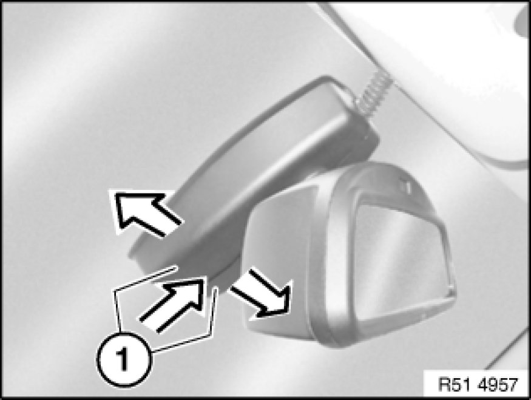
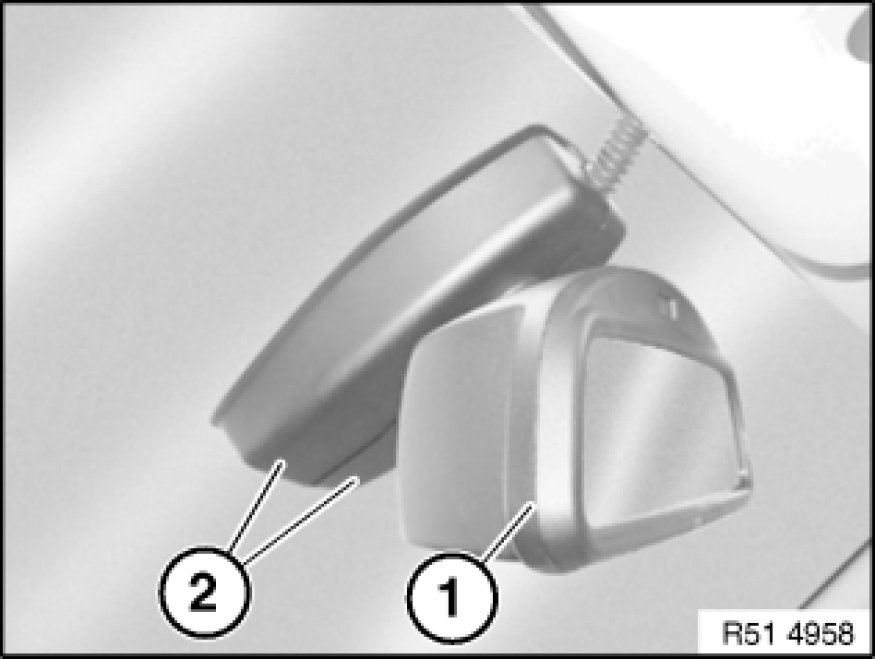
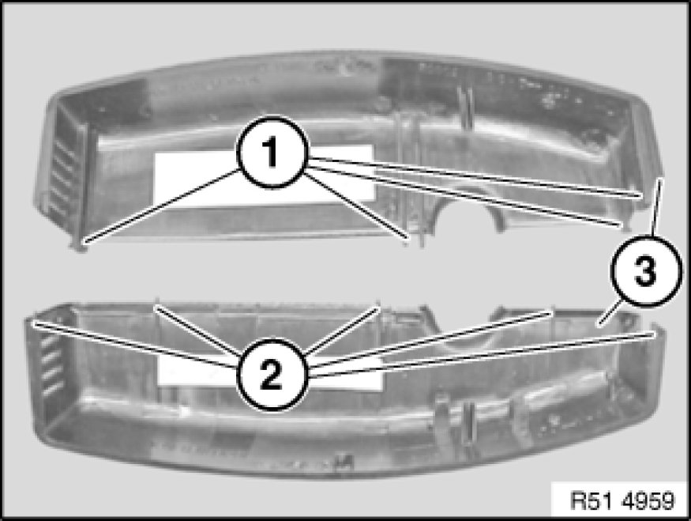
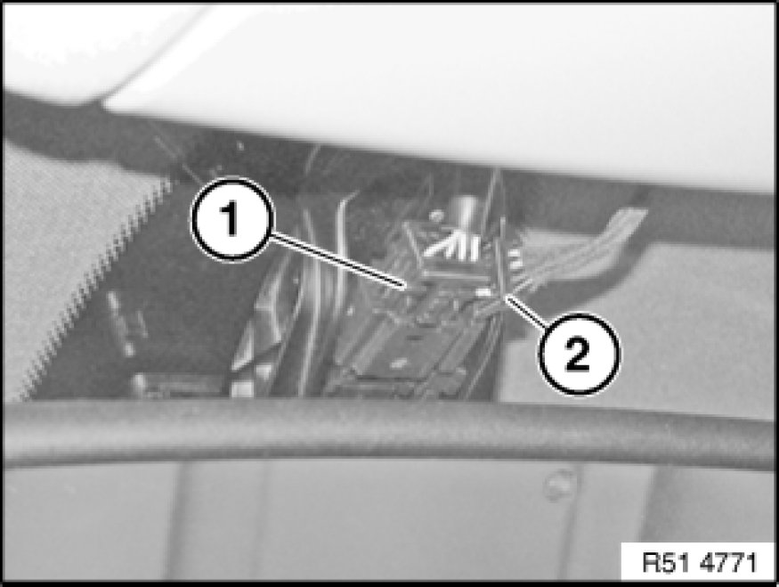
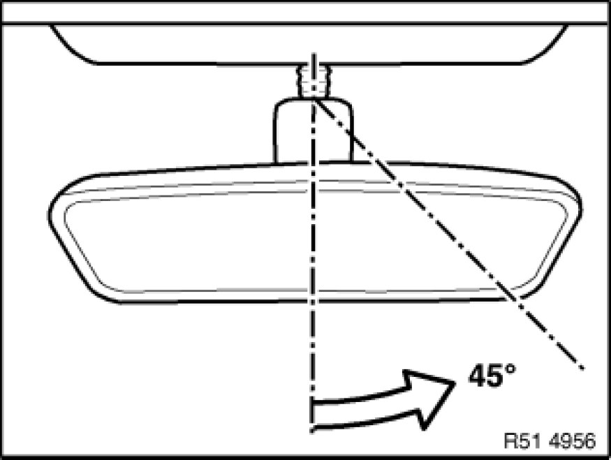
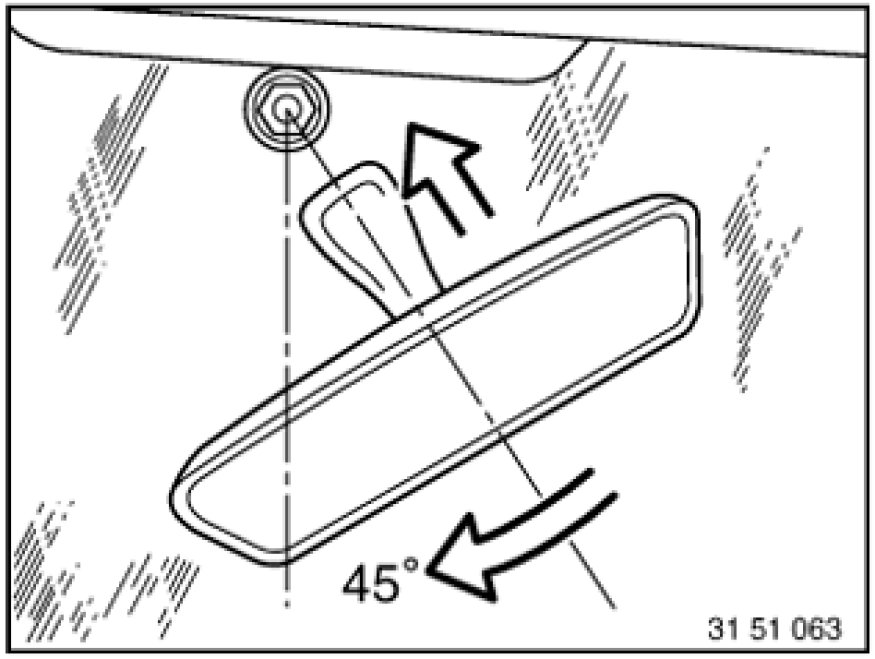

Removing and Installing/Replacing Interior Rearview Mirror (With Japanese Toll Mirror)
51 16 060 - Removing and installing/replacing interior rearview mirror (with Japanese toll mirror)

Important!
Work may only be carried out at a room/object temperature of 18 ... 28 °C.
If this cannot be guaranteed (cold/hot countries), it is necessary to equalize the temperature of the windscreen, mirror foot and rearview mirror (e.g. car left to stand indoors or in the shade for at least 30 minutes).

Version with remote control for central locking:
If necessary, disconnect negative lead from battery [1][2]12 00 ... Instructions For Disconnecting and Connecting Battery.
Version with compass:
Check compass function if replacing or after disconnecting interior mirror plug connection or battery.
If necessary, calibrate compass in interior rearview mirror Testing and Inspection.
E60 Security version:
Rain sensor is not installed, cable connection is tied back in roofliner.
Important!
To avoid breaking windscreen:
Screw rearview mirror off mirror mount.
Mirror must not be pulled or pressed off towards front or rear.

Press on end caps (1) and at same time pull them apart; this releases clip connection of both caps (1).

Turn mirror (1) to right and left and feed out end caps (2).

Installation Note:
Catches (1) and guides (2) of end caps (3) must not be damaged, replace if necessary.

Disconnect plugs (1 and 2).
Note:
Pay attention to cable guide for rain sensor.
E60 Security version:
Rain sensor is not installed, cable connection is tied back in roofliner.

Important!
Do not pull or press rearview mirror off towards front or rear.
Because of altered mirror foot, rearview mirror must be twisted off.
Twist mirror foot approx. 45° to right until mirror foot is released from mirror mount.

Installation Note:
1. - Twist mirror foot by approx. 45° and fit to mirror mount.
2. - Turn mirror foot until it engages on mirror base.
Only in case of replacement with version with remote control for central locking:
If necessary, initialize all transmitters (ignition keys), refer to Owner's Handbook.